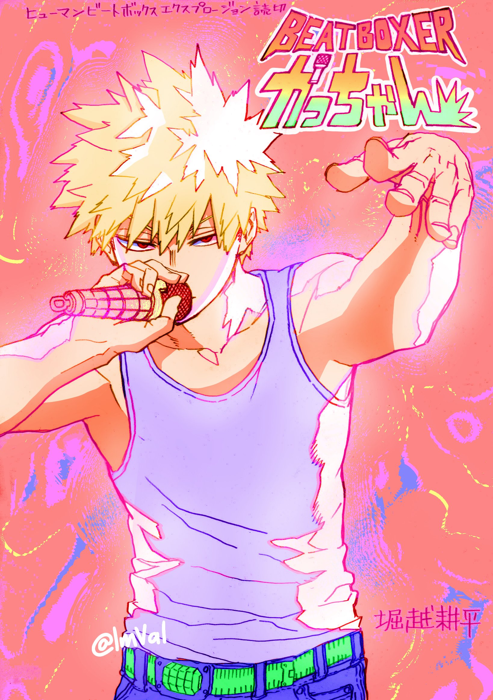
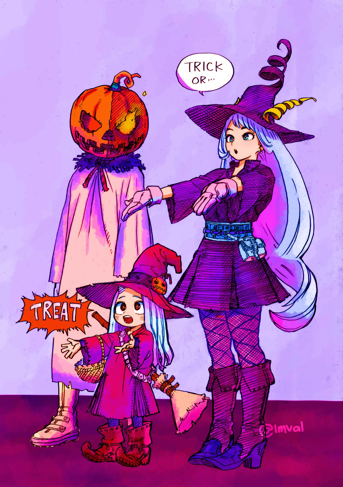
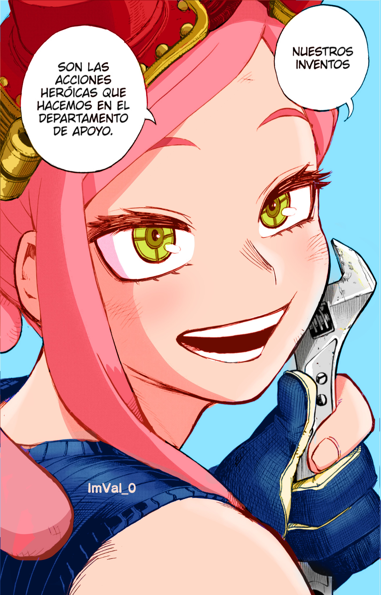
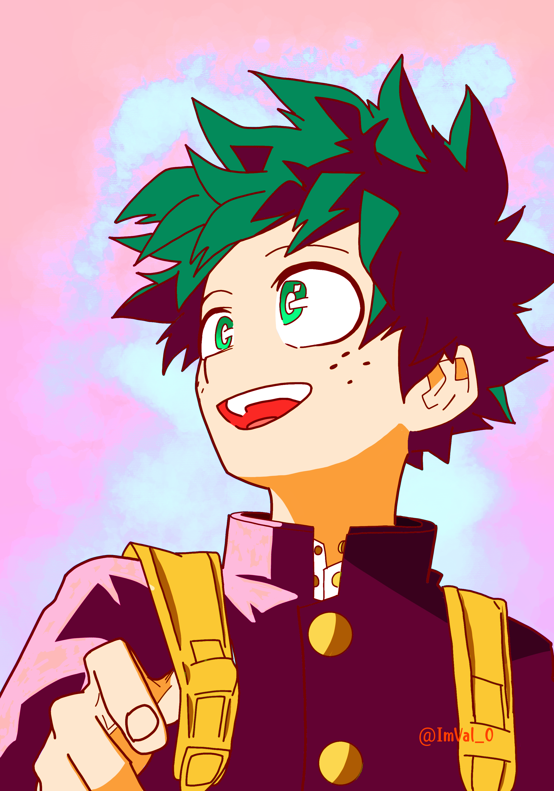
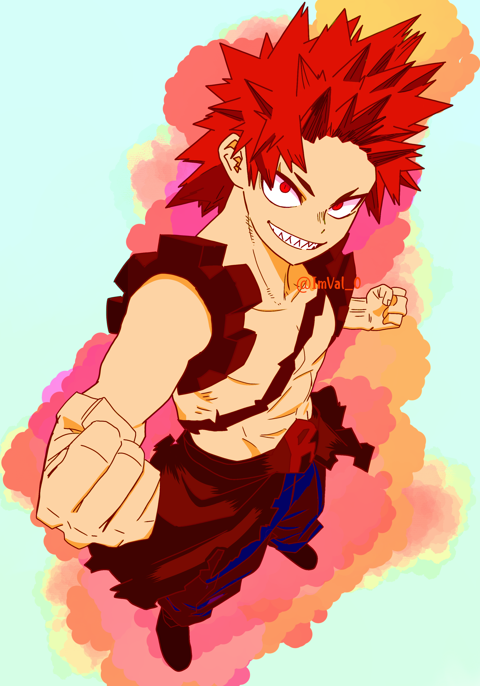
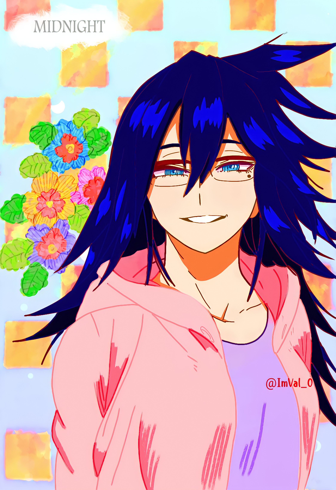
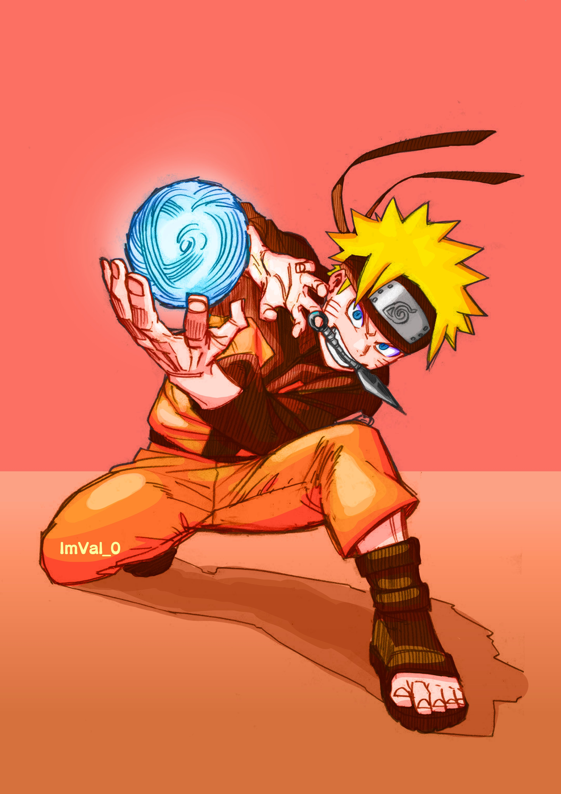
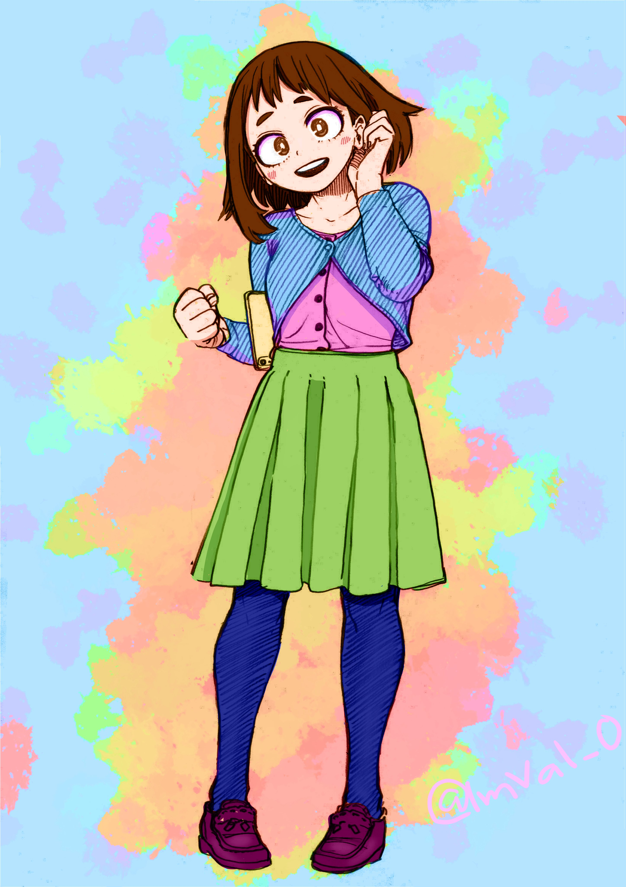
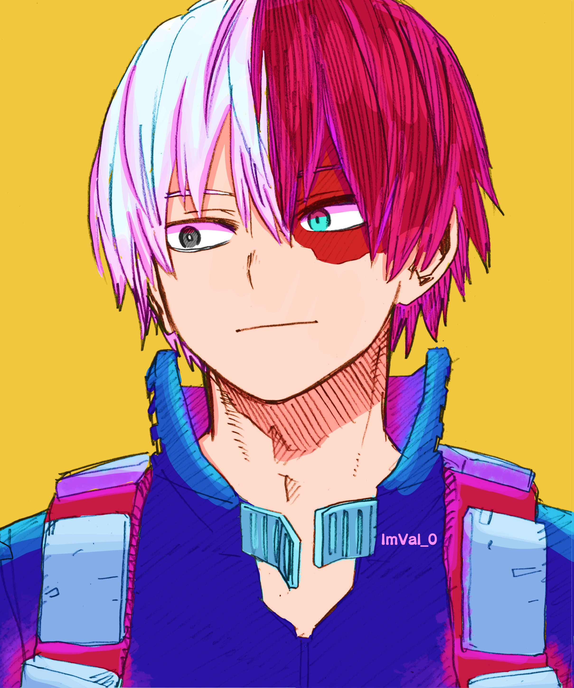

Coloreos
Para mí los coloreos representan una forma de explorar el uso de colores y sus diversas combinaciones, así como la
aplicación de luces, sombras y contrastes. Este enfoque me permite familiarizarme con el software dedicado a la
ilustración y sus distintas herramientas.
El uso de esta paleta de colores refleja mi estilo personal. Además, me brinda la oportunidad de experimentar
con contrastes que van más allá de lo que observamos en la vida cotidiana. A través de este proceso, puedo
transmitir las emociones que me provoca el acto de colorear y cómo percibo a los personajes de la obra.
Me dedico específicamente a realizar coloreos de My Hero Academia porque el estilo de dibujo de Kohei Horikoshi
ha sido una fuente de inspiración para mí desde que descubrí su obra, lo que ha influido significativamente en
mi carrera como artista.








